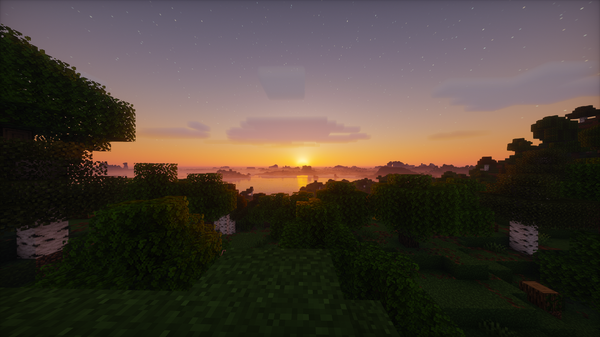
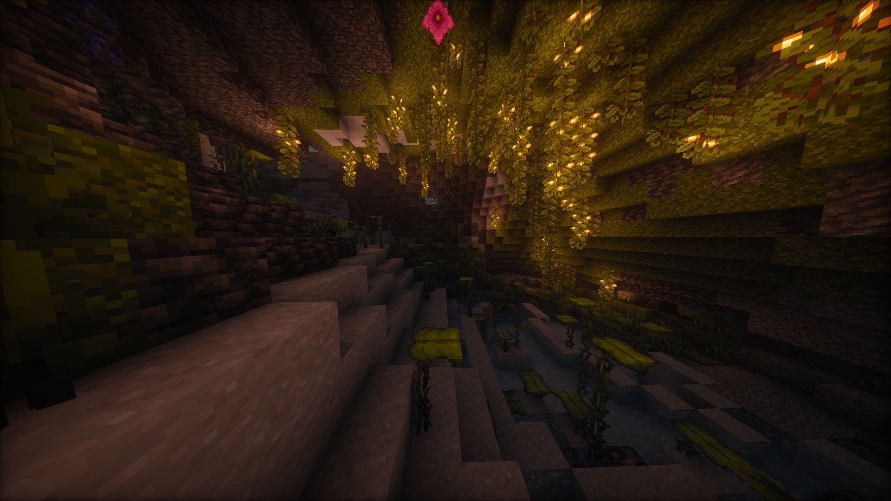

Captures Haute Résolution
In-Game Gallery
Captures grand format d'OffShades en jeu sur Minecraft 1.20+ avec Iris Shaders. Diffusion atmosphérique, godrays volumétriques et identité visuelle pour chaque biome.


